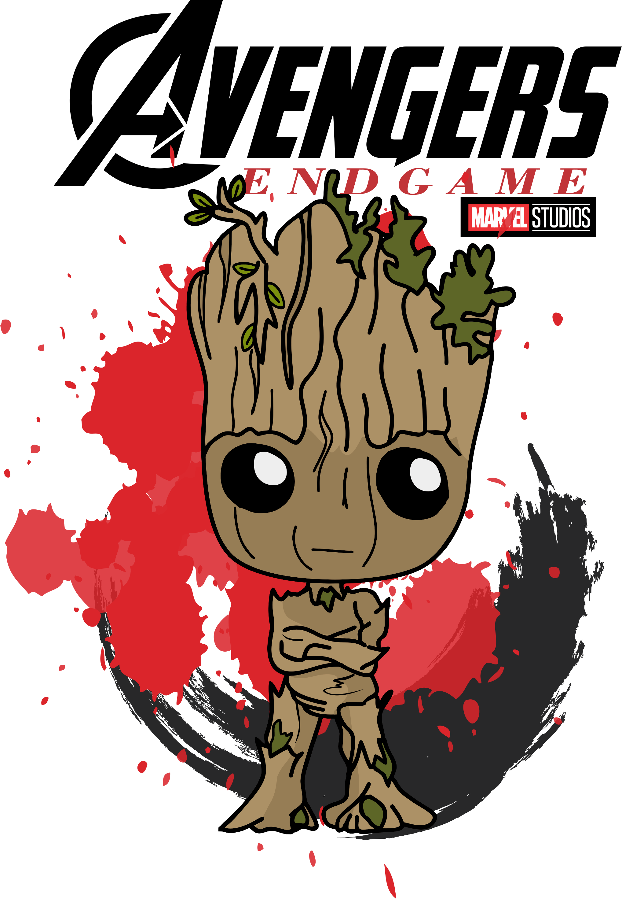

Groot es un superhéroe ficticio que aparece en los cómics estadounidenses publicados por Marvel Comics. Creado por Stan Lee, Larry Lieber y Jack Kirby, el personaje apareció por primera vez en Tales to Astonish # 13 (noviembre de 1960). Una criatura extraterrestre, similar a un árbol sensible, el Groot original apareció por primera vez como un invasor que pretendía capturar humanos para la experimentación. Aunque fue presentado originalmente como un villano, el personaje fue reconfigurado como un ser noble y heroico en 2006, y apareció en el cómic Annihilation: Conquest. Más tarde apareció en el cómic Guardianes de la Galaxia, formando parte del equipo homónimo. Groot ha aparecido en una variedad de mercancía asociada con Marvel, como series animadas de televisión, juguetes y tarjetas.
